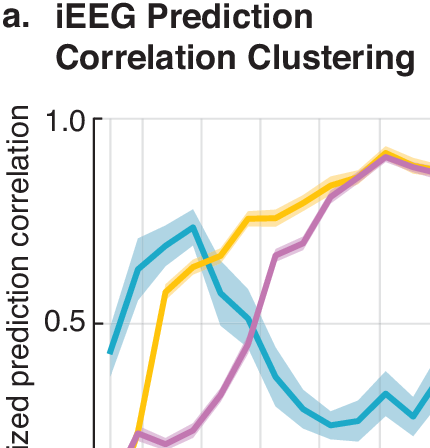
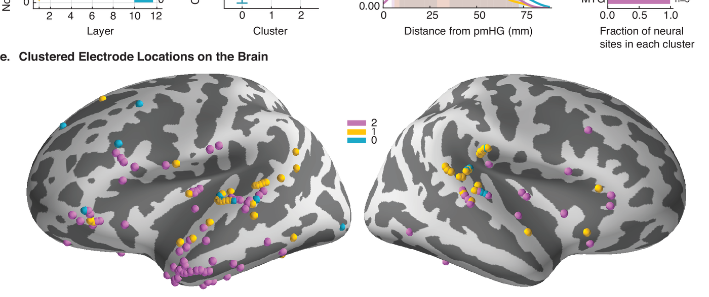
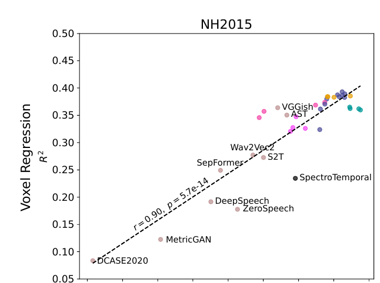

Music You Can Experiment On
From watching the musical brain to testing it
Zhiqian Chen
Department of Computer Science, Rochester Institute of Technology
The question
A woman who no longer knows her children can still sing every verse of a hymn
Music reaches a brain that has lost almost everything else.
Families and care staff see this every day, long before any scanner did.
Could we use that on purpose, the way we use a drug?
In forty minutes you will see why we cannot yet, and what would change it.
Preview 1 of 4 · What we can see
From electrodes on the cortex, a rock song can be played back
Heard vs decoded
heard
decoded from the brain
Rhythm and melody contour survive. Words barely do.
Preview 2 of 4 · Seeing is not understanding
The best music model looks hundreds of notes back. The brain fits best at about eight
Agreement is not identity
Dark line: how well a model's surprise predicts MEG. Light line: how well the model predicts music.
They peak in different places.
Preview 3 of 4 · The clinic
In dementia, music lifts mood. It does not measurably restore memory
Preview 4 of 4 · Music you can experiment on
Same notes, same sound, one setting changed
order 0: the notes of Für Elise, shuffled
order 1: each note depends on the one before
the real opening
A stimulus you can dial, write down and repeat
Three findings
Where this talk lands
- We can now read music out of the brain, and AI models of music predict the brain.
- Almost all of it is correlation, and in the clinic music helps only modestly.
- Both have one cause: we cannot vary the music. Generative models can.
1 Why music
The regions that hold long known music are among the last that Alzheimer's reaches
1 Why music
Listening to music recruits nearly every large system in the brain
1 Why music
Music releases dopamine twice: once while we wait, once when it arrives
1 Why music
A steady beat can help a person with Parkinson's walk
The beat reaches the motor system directly
Patients step to the pulse. Clinicians call it rhythmic auditory stimulation.
Remember this one. It comes back in the clinic.
1 Why music
We know music reaches deep into the brain.
Do we know why?
The map
Four arrows the field works on, and a fifth that is mostly empty
2 What we can see
Every recording method trades time against space
EEGmilliseconds, centimeters
MEGmilliseconds, better localization
fMRIseconds, millimeters
Intracranialboth, only in surgery patients
Music changes in milliseconds. Ask where with fMRI, when with EEG.
2 What we can see
Auditory cortex holds a population that answers only to song
Speech, music, and song
165 everyday sounds. Each column is one neural population. The last one fires for music with singing, and little else.
The map
Arrow 1: predict the brain from the music
2 What we can see · Running example
Listening is prediction: each note of Für Elise confirms or breaks an expectation
2 What we can see · Encode
Di Liberto's test: does EEG need surprise, beyond the sound itself?
Two models, one difference
Predict EEG from acoustics (A), then from acoustics plus surprise (AM). The gap is the brain's share of expectation.
2 What we can see · Encode
Surprise adds a small, reliable gain on top of acoustics
Green: sound only. Orange: sound plus surprise
Across listeners, adding melodic expectation predicts EEG better. The effect sits over central channels, about 200 ms after each note.
- Seen in most of the 20 listeners
- Stronger in musicians
- Confirmed with electrodes on the cortex
2 What we can see · Encode
The gain grows when the listener model remembers more of the past
Memory length matters
Let the expectation model remember 1 bar, 2, 4, up to the whole piece. The EEG gain rises with memory.
Note what varied here: the model of the listener. The music stayed the same.
2 What we can see · Encode
The limit: surprise could only be measured, never set
The pieces were fixed recordings. Surprise rose and fell with them, together with loudness, tempo and timbre.
To separate surprise from everything else that changes with it, you would need music where only surprise moves.
2 What we can see · Encode
The cortex locks to the beat, even when the meter is only imagined
EEG peaks at the imagined meter
Same beat for everyone, 2.4 Hz. Asked to imagine a march, listeners show a peak at 1.2 Hz. A waltz, at 0.8 and 1.6 Hz.
2 What we can see · Running example
A tiny graph of note transitions already captures a musical tradition In progress
Für Elise as a graph: each note points to the notes that follow it.
This is the same object the surprise curve was computed from.
Chen et al., Markov graph analysis of six corpora, in preparation
2 What we can see
Remembering a single note already tells six traditions apart In progress
70.2%
style identified from a 12 by 12 transition table, majority class 21%
Order 0 knows only which notes occur. Order 1 knows which note follows which. That one step is the big jump.
Chen et al., in preparation
The map
Arrow 2: play the music back from the brain
2 What we can see · Decode
Twenty nine epilepsy patients listened to a Pink Floyd song with electrodes on the cortex
A rare window: ECoG during surgery planning
The grids were there for clinical reasons. Listening was the experiment.
- 2,668 electrodes in total
- One song, three minutes, passive listening
2 What we can see · Decode
Learn a map from electrode activity to the song's spectrogram, then turn it into sound
2 What we can see · Decode
347 electrodes carried the music, most over the superior temporal gyrus
Both hemispheres, right side matters most
Top: every electrode. Bottom: those that tracked the song, colored by region. Red is the superior temporal gyrus.
Removing right temporal electrodes hurt decoding the most. A subregion was tuned to rhythm.
2 What we can see · Decode
About 40 electrodes and one minute of data reach 80 percent of the best result
Small data, steep curves
Left: electrodes. Right: seconds of training data.
linear decoder
2 What we can see · Decode
The limit: one song, and electrodes inside the skull
Every patient heard the same three minutes. A decoder that has only ever seen one song cannot tell us what it would do with another.
Can a non invasive scan do the same, across many songs?
2 What we can see · Decode
From fMRI, a music generator can regenerate what was heard

Five listeners, 540 clips, ten genres
fMRI is mapped to a 128 number music embedding. A text to music model turns the embedding into sound.
2 What we can see · Decode
The generated clip matches the heard one in genre and mood about 85 percent of the time
Chance is 50 percent
Right group: identification judged in a music embedding space. Green: generated by MusicLM. Dotted line: the best any decoder could do.
Melody and timing do not match.
The map
Arrow 3: does a model of music resemble the brain?
2 What we can see · Compare
Deeper layers of a music transformer match brain sites farther from primary cortex


Layer depth follows cortical hierarchy
Teal sites prefer early layers and sit near primary auditory cortex. Purple sites prefer late layers and sit farther out.
2 What we can see
Every one of these studies shares one design
3 Seeing is not understanding
Most of what we hear in a reconstruction comes from the generator, not the brain
3 Seeing is not understanding · Compare
Better audio models look more like auditory cortex, without being trained to

horizontal: overall task performance (right is better)
r = 0.90
task performance vs fit to auditory cortex fMRI, 36 models
Still 0.71 after removing the weakest models. Alignment appears early in pretraining.
3 Seeing is not understanding · Compare
But the most brain like model is not the best model of music
35 MEG and 20 EEG listeners
Three listener models compete: a rule based one, IDyOM, and a Music Transformer. Each gives a surprise curve, like our Für Elise curve.
Recall the preview: the brain's fit peaks at about 8 notes of context.
3 Seeing is not understanding
Decoders are trained one listener at a time, on a handful of listeners
5 listeners
behind the fMRI music reconstructions
10 to 20
listeners in typical public music EEG datasets
Vision decoding now shares models across people. Music decoding mostly does not.
Few public datasets ship the audio, so models cannot be compared on the same stimuli.
3 Seeing is not understanding
Agreement between two systems does not mean they compute alike
3 Seeing is not understanding
Everything so far is a correlation.
To test a cause, something has to be changed.
The map
Arrow 4: does music help patients?
4 The clinic
Music therapy helps, but modestly, briefly and with limited certainty
4 The clinic
In dementia, mood and behavior move. Agitation and cognition do not
Four weeks after treatment ends, no outcome shows a clear effect.
4 The clinic
Feelings improve. Measured function often does not
4 The clinic
Music lessons do not make children smarter, once the controls are fair
4 The clinic
The best understood music therapy is the one with a knob
+10.8 steps per minute
gait cadence after stroke with rhythmic auditory stimulation, 7 trials, low certainty
The beat is a parameter. It can be set, written down and repeated. Music with a strong beat beat a bare metronome.
4 The clinic
Across reviews, the same complaint: nobody can say exactly what the intervention was
Which music? How loud, how fast, how familiar? Live or recorded? Chosen by whom?
Cochrane reviews keep asking trials to describe the intervention so it can be compared and repeated.
A drug has a dose.
A music intervention has a playlist.
4 The clinic
The bottleneck is not the measurement.
It is the stimulus.
The map
Arrow 5: set the music, one knob at a time
5 Music you can experiment on
A generative model turns music into a variable
5 Music you can experiment on
A controllable stimulus buys three things that recorded music cannot
5 Music you can experiment on · Running example
The simplest knob: how many notes back each next note depends on
order 0
shuffle the notes, ignore the past
order 1
walk the Für Elise graph
Same notes, same rhythm, same timbre. Only predictability moves.
5 Music you can experiment on · Running example
Hear the knob turn
order 0
order 1
the real piece
Bach corpus, order 1 chain
Bach, real
Each version comes with its settings. That is the dose you can write in a methods section.
5 Music you can experiment on · Running example
A testable prediction: EEG tracking of surprise should rise with the order
5 Music you can experiment on
The catch: higher order chains sound more like the style, and start to copy In progress
A knob has a range
Up and to the right: more convincing style, but longer spans copied verbatim from training.
For a stimulus that is new to the listener, stay left.
Chen et al., in preparation
5 Music you can experiment on
Richer knobs live inside large music generators Under review
5 Music you can experiment on
What to measure: alignment that survives an acoustic baseline Planned
5 Music you can experiment on
One study a biosignal lab could run within a year Planned
- Generate pairs that differ in one property only: predictability, style, tempo.
- Record EEG while people listen, including older adults and hearing aid users.
- Test whether the response tracks the property beyond acoustic features.
- Report the generator settings as the dose.
Close
What I hope you take away, and what I am looking for
She still sings the hymn. If we could change one thing in it and watch her brain answer, what would we learn?
- Music can be read out of the brain, and music models predict the brain.
- It is still correlation, and clinical effects are modest.
- The stimulus is the bottleneck. Generative models make it a variable.
Looking for partners
EEG labs with older adult, hearing loss or dementia cohorts, to run the first controlled stimulus study. We bring the generators and the analysis.